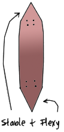
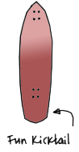
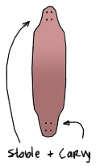

Board Basics
Believe it or not, the shape of your board is very important. Generally, boards are broken up into three different categories: pintail, cruiser, and flexible. The different shapes act uniquely to better serve the boarder. For instance, a more flexible board shape allows the rider to dance and carve better. On the opposite spectrum, a more solid, larger board allows the rider to bomb huge hills without risk of too much speed wobbles. As a prospective buyer, one needs to think about what kind of riding they are most likely going to focus on. However, this goes without saying that one can still tuck and cruise a giant mountain, but they run a greater risk of beefing it, and noone really wants that, do they? So, using the guide below, decide which board suits your needs best. Pintail
The pintail shape is used to prevent the wheel from coming in contact with the board (called "wheelbite") while still providing ample footspace. Pintails are most commonly used with top mounted trucks.
Pintails actually have a function other than looking good.
- The rear footplacement is smaller, therfore, you are less likely to initiate oversteer during a carve.
- Being narrow in the back also makes the board twist torsionally letting you control either truck independently (to a degree)
- Wheelbite is less of an issue
- Hanging your toes/heel off the board is a cool feeling.

Cruiser
A classic deck shape, these have a somewhat similar shape to normal skateboards, in that they have a kick-tail on the back. These medium-length longboards are popular because their smaller size and the addition of a kicktail make it easy to navigate sidewalks and crowds.
It is all about the push and the style. Nothing better than an easy skate along the boardwalk or bike track. Decks are big, some are lower to the ground to make pushing easier, decks are generally stiffer with little flex. This makes it easier to walk the deck, swap push feet, get on and off the deck. A great cruising deck can have a single, double, or no kick at all, it just comes down to rider choice. Wheels will still tend to be big and soft.

Flexible
Usually intended for lower speed riding because when going faster, a flexible board can have torsional flex which is one cause of speed wobbles. A lower center of gravity makes these longer boards more stable and easier to push. The flex of these boards also acts as a dampening system to help avoid discomfort on longer rides.